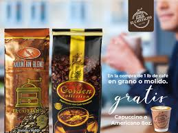

Nuestra Visión
En Cafetalito, soñamos con convertirnos en el rincón favorito de cada comunidad, donde cada taza de café no solo despierte los sentidos, sino también emociones, recuerdos y sonrisas.
Nuestra visión es ser reconocidos como un referente del café artesanal en Guatemala, comprometidos con la sostenibilidad, la innovación y el respeto por nuestras raíces cafetaleras.
Aspiramos a expandir la experiencia Cafetalito más allá de nuestras puertas, llevando el calor, el sabor y la esencia de nuestro café a nuevos lugares, sin perder la cercanía y autenticidad que nos caracteriza.
